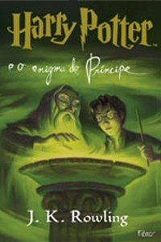

Toggle navigation
Blog Livros que Li
Resenhas
Voltar

Título do livro
Autor
Páginas
Editora
Resenha
Sou a Thalita e amo muito ler. E estou sempre com um livro por perto. Já li um pouco de tudo, e por isso, criei esse blog para poder compartilhar as resenhas dos livros que mais gostei.